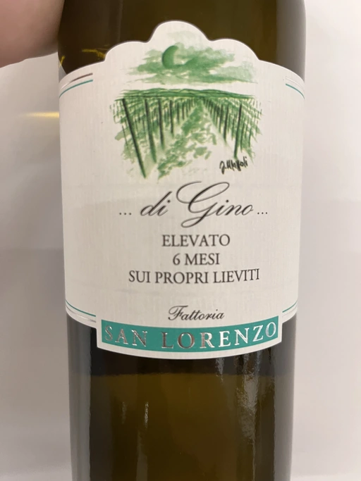

- Type
- White Still, Dry
- Producer
- Fattoria San Lorenzo
- Vintage
- 2021
- Location
- Italy, IGP Marche
- Grapes
- Verdicchio
- Alcohol
- 13.5
- Sugar
- 1.6
- Price
- 413 UAH, 470 UAH
- Cellar
- 1 bottle
Ratings
There are no ratings of this wine yet. It’s waiting for the right moment, which could be today, tomorrow or even in a year. Or maybe, I am drinking it at this moment… So stay tuned!